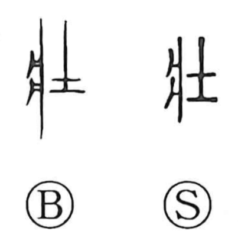

壮

Kun: sakan, tsuyoi | On: sou
strong ・ vigorous ・ robust ・ youth
Explanation
Originally written 壯, this is a phono-semantic character. The component 爿 depicts a low ritual table with legs on which sacrificial meat was set, and it could also serve as an emblem of royal kinship, as for princes of the Yin house. 士 shows the head of a small battle-axe, the badge of the warrior rank. Closely related graphs such as 將/将 and 将軍 portray the figure who bears the sacrificial meat after prayers for victory and goes on to lead the army. Within this ritual–military sphere, 壮 designated a warrior of royal descent, the core of a war band; from that status it developed the senses of robust vigor and grandeur, seen in compounds like 強壮, 壮健, and 壮大.